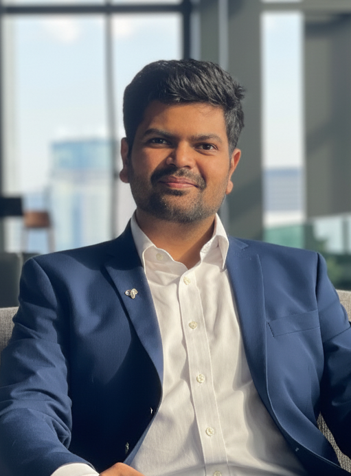

Aalok Thakkar
(આલોક ઠક્કર)

thakkar @ ashoka.edu.in
I work at Ashoka University.
My research is on
logic
The study of formal systems for representing and reasoning about truth, inference, and computation.
in computer science, with a focus on
program synthesis
Automatically generating programs from examples or from high-level descriptions of intended behavior.
and
automata theory
The study of abstract models of computation and formal languages.
.
News:
January 2026: I have joined Bhāvanā as a corresponding editor for the year 2026.
December 2025: We will host a mentoring workshop as a part of FSTTCS 2025 at BITS Pilani Goa Campus on December 16, 2025.
December 2025: Four of our CS pedagogy papers are accepted at ACM Compute 2025 at IIT Ropar (December 7-9, 2025).
November 2025: pdf, My opinion piece on how to stay relevant is published by CNBC TV18.